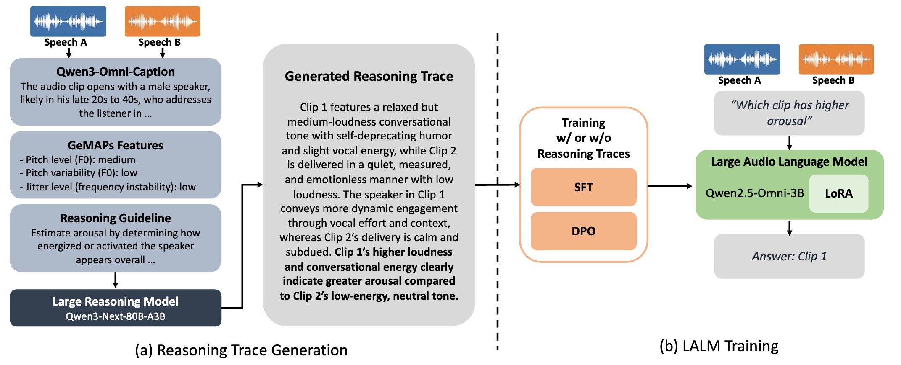

Large audio-language models (LALMs) can reason about audio, yet it remains unclear whether they can perform comparative judgments between two speech signals along emotional, environmental, linguistic, prosodic, and interpersonal dimensions. We study this question in the context of speech emotion recognition (SER), where the model determines which utterance exhibits higher arousal, valence, or dominance.
We introduce a reasoning-guided ordinal SER framework that conditions an LALM on paired speech inputs. The model is trained using reasoning traces generated from both semantic audio descriptions and acoustic evidence derived from GeMAPS features, enabling interpretable comparative decisions. Beyond direct supervision, we also employ direct preference optimization to encourage stronger separation for emotional differences.
Experiments show that the proposed framework improves preference prediction while requiring only 5% of the training data used by conventional ordinal SER systems.
Given two utterances, the model answers which one has the higher attribute value. We ground its reasoning in what can be heard and measured in the two clips.

Preference accuracy (%) on MSP-Podcast test pairs and on two unseen corpora: BIIC-Podcast (Mandarin) and WHiSER. Fine-tuning on 10k pairs per attribute outperforms SSL-based ranking models trained on 240k pairs per attribute.
| MSP-Podcast | Cross-domain (avg) | |||||
|---|---|---|---|---|---|---|
| Model | Arousal | Valence | Dominance | Avg | BIIC | WHiSER |
| WavLM + RankNet | 79.2 | 80.6 | 75.3 | 78.4 | 72.1 | 76.4 |
| HuBERT + RankNet | 78.1 | 77.3 | 74.2 | 76.5 | 71.0 | 75.8 |
| RankList | 80.8 | 81.3 | 76.7 | 79.6 | 73.7 | 77.2 |
| Qwen2.5-Omni-3B (zero-shot) | 65.8 | 70.7 | 54.7 | 63.7 | 57.2 | 67.7 |
| + SFT | 88.1 | 87.8 | 86.7 | 87.5 | 76.0 | 89.8 |
| + SFT-CoT | 85.5 | 86.5 | 84.6 | 85.5 | 74.1 | 85.4 |
| + DPO | 88.5 | 88.8 | 86.3 | 87.9 | 75.7 | 91.1 |
| + DPO-CoT | 88.7 | 89.0 | 86.7 | 88.1 | 77.0 | 90.9 |
MSP-Podcast training pairs with the evidence given to the reasoning model, the verified reasoning trace r⁺ used by SFT-CoT and DPO-CoT, and the wrong trace r⁻ used as the rejected response in DPO-CoT.
Responses of the DPO-CoT model on held-out pairs, including unseen conditions: a different language (Mandarin BIIC-Podcast) and an attribute it was not trained on.
If you find this work useful, please cite:
@inproceedings{naini2026comparative,
title = {Comparative Reasoning: Making an Audio Language Model Better at Comparing Emotions},
author = {Naini, Abinay Reddy and Kim, Jaeyeon and Yang, Chao-Han Huck and Watanabe, Shinji and Busso, Carlos},
booktitle = {Interspeech},
year = {2026}
}